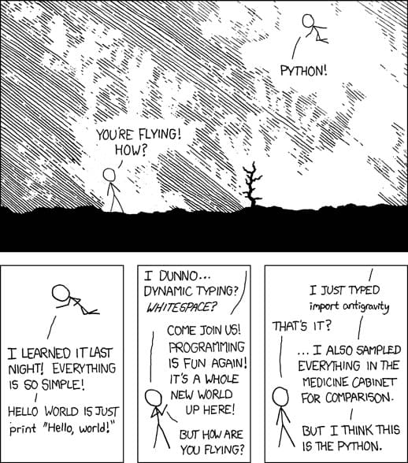
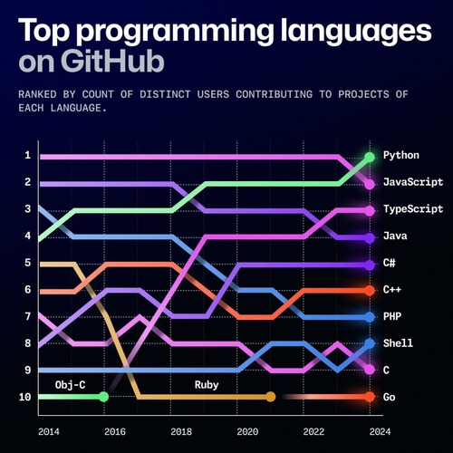

Python
In the rapidly evolving landscape of artificial intelligence and machine learning, Python has emerged as the de facto programming language of choice for developers, researchers, and data scientists. Its dominance in these fields is no coincidence – Python offers a unique combination of features and advantages that make it exceptionally well-suited for AI and ML development.
Why Python
Rich Libraries
One of Python’s greatest strengths lies in its extensive ecosystem of specialized libraries and frameworks for machine learning and AI. Libraries like TensorFlow, PyTorch, and scikit-learn provide robust foundations for developing sophisticated machine learning models. NumPy offers powerful tools for numerical computing, while Pandas excels at data manipulation and analysis. These libraries, maintained by both tech giants and the open-source community, provide pre-built components that significantly reduce development time and complexity.

Easy to Learn and Use
Python’s syntax is remarkably intuitive and readable, often described as “pseudocode that runs.” This characteristic is particularly valuable in machine learning, where complex algorithms and mathematical concepts need to be translated into executable code. The language’s emphasis on readability and simplicity means that developers can focus on solving machine learning problems rather than wrestling with complicated syntax.
Consider this simple example of a machine learning model in Python:
from sklearn.model_selection import train_test_split
from sklearn.linear_model import LinearRegression
# Split data and train model
X_train, X_test, y_train, y_test = train_test_split(X, y, test_size=0.2)
model = LinearRegression()
model.fit(X_train, y_train)The code above is self-explanatory even to those with basic programming knowledge, demonstrating Python’s emphasis on clarity and simplicity.
Thriving Open-Source Community
Python’s open-source nature has fostered a vibrant, collaborative community that continuously contributes to its growth. This community-driven development has resulted in: - Regular updates and improvements to existing libraries - Extensive documentation and tutorials - Quick bug fixes and security patches - Readily available support through forums and discussion boards
The collaborative spirit of Python’s community has accelerated innovation in AI and machine learning, making cutting-edge technologies more accessible to developers worldwide.

Widespread Popularity
Python’s popularity in the AI and ML space creates a positive feedback loop: more developers using Python leads to more resources, tools, and job opportunities, which in turn attracts more developers. According to recent surveys, Python consistently ranks as one of the most popular programming languages, particularly in data science and machine learning roles. This widespread adoption means: - Abundant learning resources - Large talent pool for organizations - Extensive code examples and solutions - Regular updates and maintenance of ML libraries
Platform Independence
Python’s cross-platform compatibility is crucial for machine learning applications that need to run in various environments. Whether developing on Windows, macOS, or Linux, Python code remains consistent and portable. This platform independence enables: - Seamless deployment across different operating systems - Easy scaling from development to production - Consistent performance across platforms - Flexibility in choosing development and deployment environments
Python provides the tools, resources, and ecosystem necessary for the wise the opportunity of building intelligent machines.
Setting Up a Python Development Environment
When embarking on Python development, especially for AI/ML projects, establishing a robust development environment is crucial.
Exploring Options
Several options exist, each with its own advantages: * Local Installation: * Pros: Complete control, offline access, and customization. * Cons: Requires manual installation and configuration, potential for conflicts, and resource management on your machine. * Popular choices: Anaconda, virtual environments (venv, virtualenv). * Cloud-Based Environments: * Pros: No local setup needed, scalable resources, easy collaboration, and often free tiers. * Cons: Reliance on internet connectivity, potential for vendor lock-in, and limited control over underlying hardware. * Popular choices: Google Colaboratory, Amazon SageMaker, Google Cloud AI Platform Notebooks, Microsoft Azure Notebooks.
Colab Notebooks
Developing with Jupyter Notebooks on Google Colaboratory (Colab) provides a seamless and user-friendly platform for Python development, particularly for AI/ML. Here’s how to get started: * Access Colab: * Visit the Colab website: https://colab.research.google.com/ * Create a new notebook by clicking “New Notebook”. * Write and Execute Code: * Colab offers a web-based interface where you can write and execute Python code in cells. * Each cell can contain code, Markdown for documentation, or even LaTeX for mathematical equations. * Execute code by clicking the “Play” button or using the keyboard shortcut (Shift+Enter). * Utilize AI/ML Libraries: * Colab comes pre-installed with many essential AI/ML libraries like TensorFlow, PyTorch, scikit-learn, and more. * You can easily import and use these libraries within your notebook. * Leverage Colab’s Features: * GPU/TPU Acceleration: Colab provides access to GPUs and TPUs, significantly accelerating the training of deep learning models. * Large File Handling: Colab integrates with Google Drive, allowing you to easily load and save large datasets. * Collaboration: Share your notebooks with others and collaborate in real-time. Key Advantages of Colab for AI/ML: * Free to Use: Colab offers a free tier with access to GPUs, making it accessible to all. * User-Friendly: The intuitive interface and pre-installed libraries simplify the development process. * Scalability: Easily scale your resources to accommodate larger datasets and more complex models. By leveraging the power of Jupyter Notebooks on Google Colab, you can efficiently develop and experiment with AI/ML models, regardless of your computational resources.
Python Basics: A Comprehensive Guide for Beginners
1. Variables and Assignment
Variables in Python are dynamically typed, meaning you don’t need to declare their type explicitly. Here’s how to work with them:
# Basic variable assignment
name = "John"
age = 25
height = 1.75
is_student = True
# Multiple assignment
x, y, z = 1, 2, 3
# Print variable types
print(type(name)) # <class 'str'>
print(type(age)) # <class 'int'>
print(type(height)) # <class 'float'>
print(type(is_student)) # <class 'bool'>
# Variable naming conventions
first_name = "John" # Snake case (recommended)
lastName = "Doe" # Camel case
PI = 3.14159 # Constants (uppercase)2. Data Types
Numbers
# Integers
x = 5
y = -10
big_number = 1_000_000 # Underscores for readability
# Floating-point numbers
pi = 3.14159
scientific = 2.5e-4
# Complex numbers
complex_num = 3 + 4j
# Basic operations
sum_result = x + y
product = x * y
division = x / y # Float division
floor_div = x // y # Integer division
remainder = x % y # Modulus
power = x ** 2 # ExponentiationStrings
# String creation
single_quotes = 'Hello'
double_quotes = "World"
multi_line = """This is a
multi-line string"""
# String operations
full_name = first_name + " " + lastName # Concatenation
greeting = f"Hello, {first_name}!" # f-strings
repeat = "Ha" * 3 # Repetition
# String methods
text = " Python Programming "
print(text.strip()) # Remove whitespace
print(text.upper()) # Convert to uppercase
print(text.lower()) # Convert to lowercase
print(text.replace("P", "J")) # Replace characters
print(len(text)) # String lengthLists
# List creation
numbers = [1, 2, 3, 4, 5]
mixed = [1, "hello", 3.14, True]
# List operations
numbers.append(6) # Add element
numbers.insert(0, 0) # Insert at position
numbers.remove(3) # Remove element
popped = numbers.pop() # Remove and return last element
numbers.sort() # Sort list
numbers.reverse() # Reverse list
# List slicing
first_three = numbers[:3] # First three elements
last_two = numbers[-2:] # Last two elements
step_two = numbers[::2] # Every second elementDictionaries
# Dictionary creation
person = {
"name": "John",
"age": 25,
"city": "New York"
}
# Dictionary operations
person["email"] = "john@example.com" # Add new key-value
del person["age"] # Remove key-value
keys = person.keys() # Get all keys
values = person.values() # Get all values3. Input and Output
Basic Input
# Getting user input
name = input("Enter your name: ")
age = int(input("Enter your age: ")) # Convert string to integer
height = float(input("Enter your height in meters: ")) # Convert to float
# Format output
print(f"Name: {name}")
print(f"Age: {age}")
print(f"Height: {height:.2f} meters") # Format to 2 decimal places
# Multiple output formats
print("Age:", age) # Separate with comma
print("You are {} years old".format(age)) # .format() method
print("Height: %.2f meters" % height) # %-formatting (old style)File Input/Output
# Writing to a file
with open('example.txt', 'w') as file:
file.write("Hello, World!\n")
file.write("This is a new line.")
# Reading from a file
with open('example.txt', 'r') as file:
content = file.read() # Read entire file
print(content)
# Reading line by line
with open('example.txt', 'r') as file:
for line in file:
print(line.strip())4. Debugging and Common Bugs
Common Errors and Solutions
# 1. TypeError
x = "5"
y = 2
# print(x + y) # TypeError: can't concatenate str and int
print(int(x) + y) # Correct: Convert string to integer
# 2. IndexError
numbers = [1, 2, 3]
# print(numbers[3]) # IndexError: list index out of range
print(numbers[-1]) # Correct: Access last element
# 3. KeyError
person = {"name": "John"}
# print(person["age"]) # KeyError: 'age'
print(person.get("age", "Not found")) # Correct: Use get() with default value
# 4. IndentationError
def example():
print("Wrong indentation") # IndentationError
def correct_example():
print("Correct indentation")Debugging Tips
# Using print statements for debugging
def calculate_average(numbers):
print(f"Input numbers: {numbers}") # Debug print
total = sum(numbers)
print(f"Sum: {total}") # Debug print
average = total / len(numbers)
print(f"Average: {average}") # Debug print
return average
# Using assert statements
def divide(a, b):
assert b != 0, "Division by zero!"
return a / b
# Try-except blocks for error handling
try:
result = 10 / 0
except ZeroDivisionError:
print("Cannot divide by zero!")
except Exception as e:
print(f"An error occurred: {e}")
finally:
print("This always executes")5. Best Practices
- Variable Naming:
- Use descriptive names
- Follow Python naming conventions
- Avoid reserved keywords
- Code Organization:
- Use proper indentation
- Add comments for clarity
- Break long lines (using )
- Error Handling:
- Use try-except blocks
- Validate input data
- Provide meaningful error messages
- Debugging:
- Use print statements strategically
- Implement logging for larger projects
- Test code with different inputs
Remember to practice these concepts by writing your own code and experimenting with different scenarios. The best way to learn Python is through hands-on experience and debugging your own code.